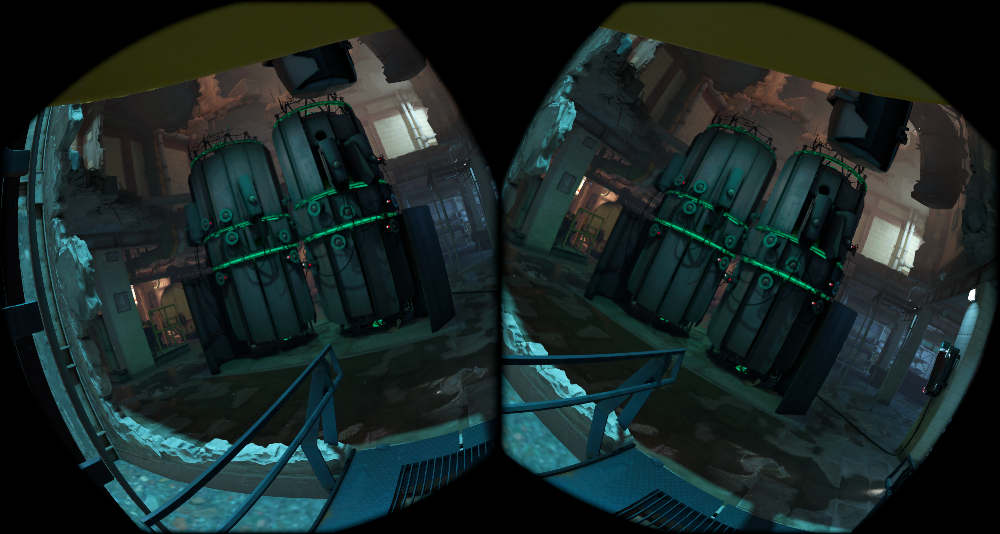

October 31, 2026 · Meta Quest 3 · APK 3504. Historical measurements, not a new benchmark of build 3514. Stationary headset; 90 seconds per mode after warmup. FPS counts real new game frames, not repeated submissions or timewarp frames. Main series: 100% render scale; TAAU is compared separately at 67%. Each baseline is the mean of two AA-off runs at the same resolution.
Headset timewarp 36 FPS / 72 Hz; MQSR off; textures 512 px, mip 0, pool 512 MiB. Maximum VRS selected: Off, TAA, TAAU and SMAA support 4×4; MSAA 2× and the hybrid up to 4×2; MSAA 4× up to 2×2. Results include these VRS limits. At 67%, Off and TAAU reach the 36 FPS ceiling: a near-zero FPS difference does not mean reconstruction is free. This is one scene and configuration, not a universal algorithm cost.
| Mode | Render | FPS | Loss vs Off | GPU MHz | Temperature |
|---|---|---|---|---|---|
| Off (first reference) | 100% | 32.21 | -0.4% | 690 | 42.0 °C |
| Off (repeat) | 100% | 31.94 | 0.4% | 690 | 41.0 °C |
| TAA | 100% | 28.60 | 10.8% | 690 | 41.5 °C |
| SMAA | 100% | 29.08 | 9.3% | 690 | 41.0 °C |
| MSAA ×2 + TAA | 100% | 23.51 | 26.7% | 690 | 41.0 °C |
| MSAA ×2 | 100% | 26.55 | 17.2% | 690 | 40.9 °C |
| MSAA ×4 | 100% | 21.64 | 32.5% | 690 | 42.0 °C |
| Off 67% (first reference) | 67% | 35.78 | 0.0% | 690 | 40.0 °C |
| Off 67% (repeat) | 67% | 35.79 | -0.0% | 690 | 40.0 °C |
| TAAU 67% | 67% | 35.90 | -0.3% | 690 | 40.5 °C |
Loss = (1 − mode FPS / baseline FPS) × 100%. Negative values mean slightly higher measured FPS. The sub-1% TAAU difference near the frame cap is shown as approximately zero in the menu, not as a speedup. Screenshots are unprocessed 4128 × 2208 stereo compositor captures; open an image for the original. Still images cannot show temporal shimmering or trails.
